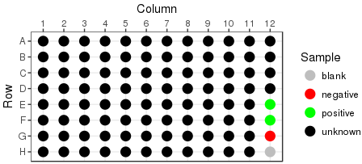
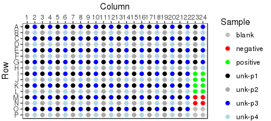
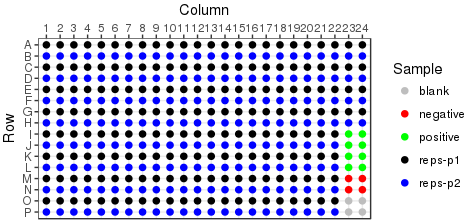
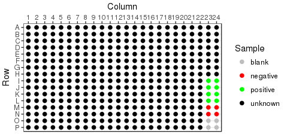
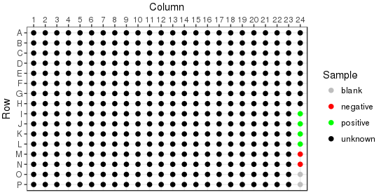
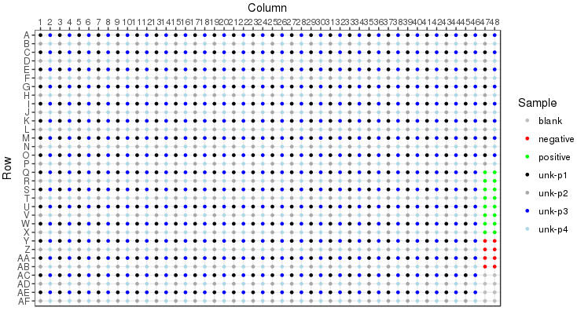
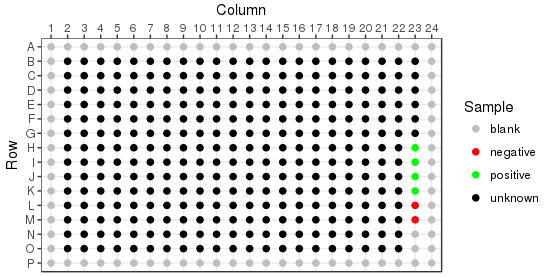
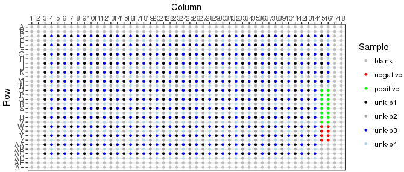

Reformat is an operation performed on plate sets. Reformat will collapse four 96 well plates into a single 384 well, providing 1 replcate per sample. It is also possible to generate duplicates or quadruplicates of each sample. The plate layout of a reformatted destination plate is predetermined by the layout of the source plate, with some examples shown below.
| 4;1x;Y;E12-H12  | 4;1x;Y;I23-P24  |
4;2x;Y;I23-P24  |
|
4;4x;Y;I23-P24  |
|
384 well source plate | |
| 8;1x;Y;I24-P24  | 8;1x;Y;Q47-AF48  |
8;1x;N;H23-O23  | 8;1x;N;O45-AC46  |